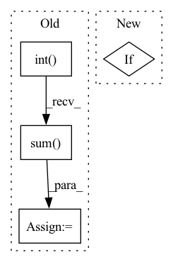

Pattern ID :3081

Before Change
self.model._validate(print_prefix="Validate Trigger Tgt", get_data=get_data_fn, indent=4)
detect_mask = mark > 0.1
sum_temp = detect_mask.int() + self.real_mask.int()
overlap = (sum_temp == 2).sum().float() / (sum_temp >= 1).sum().float()
print(f" Jaccard index: {overlap:.3f}")
for param in generator.parameters():
After Change
return poison_input, poison_label
self.model._validate(print_prefix="Validate Trigger Tgt", get_data=get_data_fn, indent=4)
if not self.attack.mark.random_pos:
overlap = jaccard_idx(mark.mean(dim=0), self.real_mask,
select_num=self.attack.mark.height * self.attack.mark.width)
print(f" Jaccard index: {overlap:.3f}")
In pattern: SUPERPATTERN
Frequency: 3
Non-data size: 4
Instances
Fragment ID: 11931222
Project Name: ain-soph/trojanzoo
Commit Name: 72428d89a3ff32428c29fe76751311f6c3235b30
Time: 2020-10-08
Author: ain-soph@live.com
File Name: trojanzoo/defense/backdoor/deep_inspect.py
M Class Name: Deep_Inspect
N Class Name: Deep_Inspect
M Method Name: remask(2)
N Method Name: remask(2)
M Parent Class: Defense_Backdoor
N Parent Class: Defense_Backdoor
M File Name: trojanzoo/defense/backdoor/deep_inspect.py
N File Name: trojanzoo/defense/backdoor/deep_inspect.py
M Start Line: 134
M End Line: 137
N Start Line: 136
N End Line: 141
'>
Before Change
print("loss: ", loss_list)
detect_mask = mask_list[self.attack.target_class] > percentile(mask_list[self.attack.target_class], 10.0)
sum_temp = detect_mask.int() + real_mask.int()
overlap = (sum_temp == 2).sum().float() / (sum_temp >= 1).sum().float()
print(f"Jaccard index: {overlap:.3f}")
def loss_fn(self, mask, mark, _input, _label, Y):
After Change
def detect(self, **kwargs):
super().detect(**kwargs)
if not self.attack.mark.random_pos:
self.real_mask = self.attack.mark.mask
mark_list, mask_list, loss_list = self.get_potential_triggers()
mask_norms = mask_list.flatten(start_dim=1).norm(p=1, dim=1)
'>
Fragment ID: 11931220
Project Name: ain-soph/trojanzoo
Commit Name: 72428d89a3ff32428c29fe76751311f6c3235b30
Time: 2020-10-08
Author: ain-soph@live.com
File Name: trojanzoo/defense/backdoor/neural_cleanse.py
M Class Name: Neural_Cleanse
N Class Name: Neural_Cleanse
M Method Name: detect(1)
N Method Name: detect(1)
M Parent Class: Defense_Backdoor
N Parent Class: Defense_Backdoor
M File Name: trojanzoo/defense/backdoor/neural_cleanse.py
N File Name: trojanzoo/defense/backdoor/neural_cleanse.py
M Start Line: 55
M End Line: 64
N Start Line: 52
N End Line: 63
'>
Before Change
def forward(self, tsrInput):
// Quantize to ints
tsrOut: torch.Tensor = tsrInput.int().float()
self.spikes_number = tsrOut.abs().sum()
self.tw = len(tsrOut)
return tsrOut
def get_output_shape(self, input_shape: Tuple):
After Change
self.quantize = quantize
def forward(self, data):
if self.quantize:
return _Quantize.apply(data)
else:
return data
'>
Fragment ID: 11931225
Project Name: synsense/sinabs
Commit Name: 0590348b5a151da56800df3c7993adecfcfb9dab
Time: 2019-11-01
Author: martino.sorbaro@posteo.net
File Name: sinabs/layers/quantize.py
M Class Name: QuantizeLayer
N Class Name: QuantizeLayer
M Method Name: forward(2)
N Method Name: forward(2)
M Parent Class: nn.Module
N Parent Class: TorchLayer
M File Name: sinabs/layers/quantize.py
N File Name: sinabs/layers/quantize.py
M Start Line: 43
M End Line: 46
N Start Line: 44
N End Line: 49